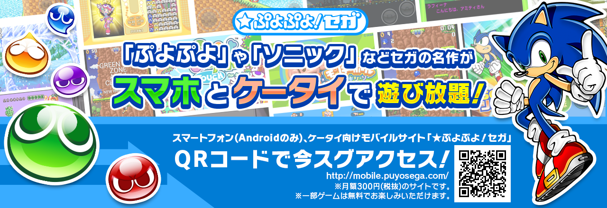

Puyo Puyo! Sega
Introduction
Puyo Puyo! Sega was a mobile phone game service offered by SEGA exclusively in Japan.
The service launched at the same time at the closure of the Sonic Cafe service on December 1st 2007. Puyo Puyo! Sega was the successor of the Sonic Cafe service (merged with Sega Ages) and most games available through it were carried over to Puyo Puyo! Sega.
For a fee of ¥315 a month (after tax), the user received access to the entire library of currently available games and could download them as many times as they wanted to. The service was available on mobile devices compatible with i-mode, Yahoo! Keitai, Willcom, or EZweb services. Later, most Android devices became compatible with the service.
The Puyo Puyo! Sega service ended in late March 2022.
Choose a year
Reference Sources
Puyo Puyo! Sega - Sega Retro
Puyo Puyo! Sega | Sonic Wiki Zone - Fandom
The GHZ - MUSEUM
動画投稿をする人【仮】 - YouTube